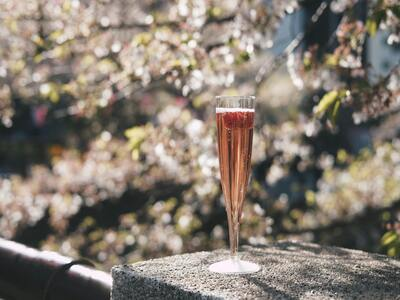
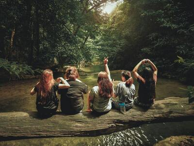
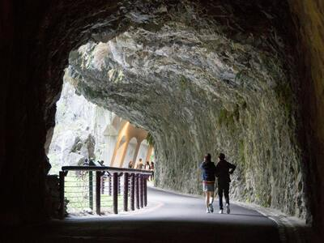

歡迎分享您的真實 體驗 / 心得 :
| 留言時間 | 冒險 | 內文 | 圖片 | 團員 |
|---|---|---|---|---|
| 2024 / 05 / 26 | japan03 | 當我漫步於東京的街頭，就像是一場充滿魔法的夢境。在這座城市中，每一個角落都蘊藏著無限的驚喜和奇遇。而談到東京之旅，酒元素總是一個不可或缺的部分。 在繁華的歌舞伎町尋找一家古色古香的小酒館，沉浸在濃烈的日本酒香氣中，品嚐著來自地方的美酒佳釀。或者，也可以在高級的酒吧裡，細品優雅的威士忌，感受它帶來的濃烈和深邃。 而在東京的夜晚，隨著霓虹燈閃爍，酒精仿佛賦予了這座城市更多的活力和魔力。無論是和友人共享一杯清涼的生啤，還是獨自一人靜靜品味琥珀色的清酒，東京的夜晚總能為你帶來滿滿的回憶和感動。 在東京之旅中，酒是連接人與城市、文化與美食的細膩紐帶，讓你更深入地感受這座城市的魅力和活力。無論是在熱鬧的街頭還是幽靜的酒吧，酒都是東京之旅中不可或缺的一部分，讓你的旅程更加豐富多彩。 |
 | Jackson |
| 2024 / 05 / 26 | thailand02 | 當我漫步於泰國的森林中，感受到一種前所未有的寧靜和神秘。濃密的樹蔭籠罩著我，陽光透過樹葉的縫隙灑下，照亮了大地。每一步踏出，都彷彿是進入了一個嶄新的世界，充滿了生機和活力。 森林中的生物在我周圍歌唱著，仿佛在迎接我的到來。我聽見了鳥兒的歌聲，感受到了風的撫慰，彷彿與自然融為一體。蟲鳴聲此起彼伏，如同一場悠長的交響樂，帶給我無盡的驚喜和舒適。 走在泥濘的小徑上，我深深吸一口氣，感受著清新的空氣灌溉著我的肺部。這片森林彷彿是一個魔法般的世界，讓我忘卻了一切煩憂和壓力，只專注於當下的美好。 在泰國的森林漫步，讓我重新與大自然連結，感受到了生命的奇妙和豐富。這段旅程將永遠留在我心中，成為我珍貴的回憶。 |
 | Amy |
| 2024 / 05 / 29 | taiwan01 | 踏入台灣的大魯閣，立刻被它壯闊的景色所震撼。高聳入雲的山峰在我眼前展開，仿佛是大自然的巨大雕塑，每一座山頭都彷彿蘊含著無盡的故事。 沿著蜿蜒的小徑穿行，我進入了一片靜謐的山林之中。樹木古老而繁茂，瀑布清澈而奔放，每一處都彷彿散發著神秘的氛圍，讓人忍不住想要去探索。 站在山巔俯瞰，整個大魯閣的壯闊景色盡收眼底。山谷間的風景如詩如畫，讓我心靈得到了極大的寧靜和滿足。這裡的每一個角落都散發著濃厚的文化底蘊和自然氣息，讓我深深著迷。 在大魯閣的旅程中，我不僅僅是欣賞美景，更是重新與大自然連結，感受到了生命的力量和奧妙。這段難忘的經歷將永遠在我心中留下深刻的烙印，成為我生命中最美好的回憶。 |
 | Tim |